Holi at Nagaur. Click to book > new visions of Indian painting |
Bibliography of South Asian Titles Worldcat lists these titles |
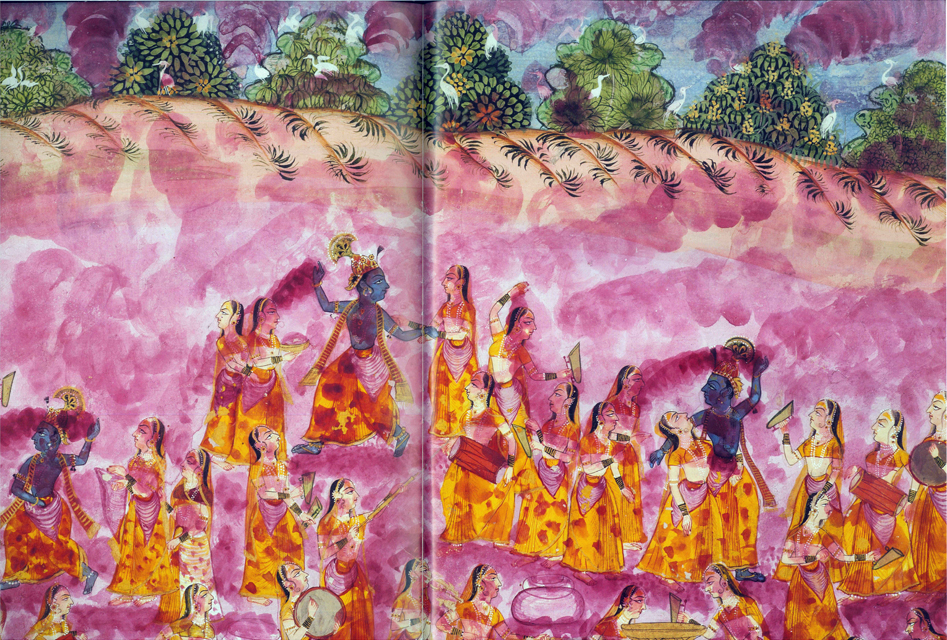 Celebrating Holi with Krishna. Click to book > new visions of Indian painting |
|
Holi at Nagaur. Click to book > new visions of Indian painting |
Bibliography of South Asian Titles Worldcat lists these titles |
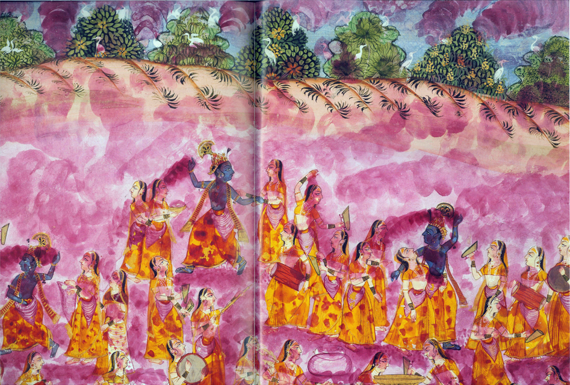 Celebrating Holi with Krishna. Click to book > new visions of Indian painting |
| 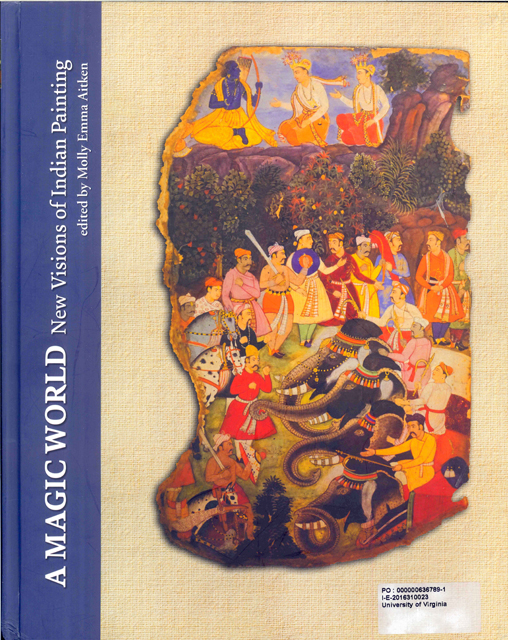 | A Magic world : new visions of Indian painting. Aitken, Molly Emma. 2016. ISBN: 9789383243150.
Contents: "The volume revisits Coomaraswamy's Rajput Painting 100 years after its original publication and engages with new scholarship in the field."
http://www.worldcat.org/oclc/960841044 http://search.lib.virginia.edu/catalog/u7363745 |
| 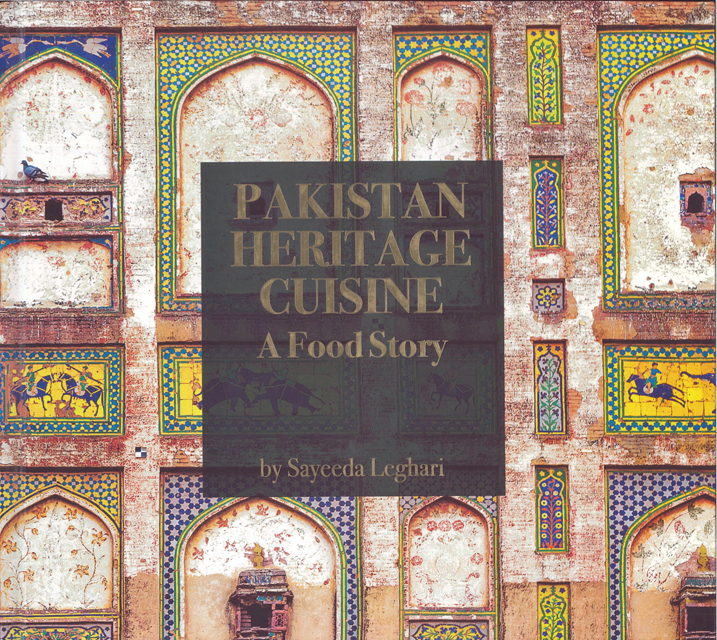 | Pakistan heritage cuisine : a food story. Leghari, Sayeeda. 2017. ISBN: 9789699251955.
Contents: The book "explores how the cuisine of a country is intricately woven into its fabric and is shaped by the history and characteristics of the region and its people. Traditions and cultures overlap in the subcontinent, which is a region of shared history. http://www.worldcat.org/oclc/1019842742 http://search.lib.virginia.edu/catalog/u7363738 |
 |
Globalization lived locally : a labour geography perspective. Neethi, P. 2016. ISBN: 9780199463626.
Contents: This book debunks myths concerned with globalization, employing a labour geography approach that focuses on how workers actively participate in differentiated geographies of capitalism. The geographic perspective sheds light on local variability and uneven development in labour market, helping chart the complex landscapes in which contemporary workers live, work, and struggle. Through four in-depth empirical case studies set in Kerala. . . "
http://www.worldcat.org/oclc/938432022 http://search.lib.virginia.edu/catalog/u7363734 |
| 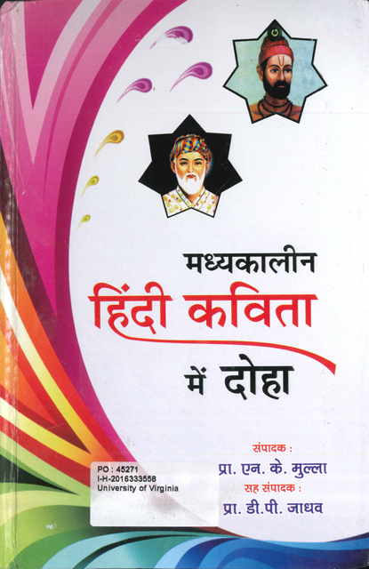 | Madhyakalina Hindi kavita mem doha. Madhyakalina Hindi Kavita Mem Doha (Seminar), Mulla, Ena. Ke., Yadava, Di. Pi., Venutai Chavan College, Karad., Hindi Vibhaga, India.
University Grants Commission, Maharashtra Hindi Parishada, 2015. ISBN: 9789381549889
Contents: Couplets in medieval Hindi poetry; transcript of papers presented at a seminar on the theme "Madhyakalina Hindi Kavita Mem Doha," held during 13-14 February in Karad, India, jointly organized by the Hindi Vibhaga of Venutai Chavan College, Karad, University Grants Commission, New Delhi, and Maharashtra Hindi Parishada. http://www.worldcat.org/oclc/970396236 |
| 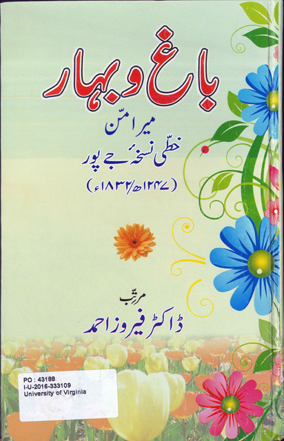 | Bagh o Bahar : khatti nuskhah-yi Jaipur (1247h/1832). Mir Amman Dihlavi, Ahmad, Firoz. 2012. Contents: "consisting of the adventures of the four darwesh, and of the King Z D Bakht." http://www.worldcat.org/oclc/969679989 |
| 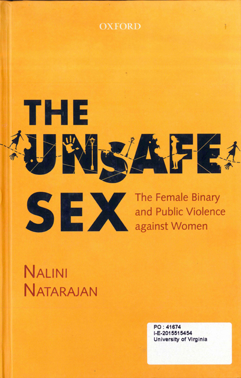 | The unsafe sex : the female binary and public violence against women. Natarajan, Nalini. 2016. ISBN: 9780199463107. Contents: "Not too long ago, India woke up to the heart-rending horror of the 'Nirbhaya' rape case. While the brutal violence against the victim sent shockwaves throughout the country, the rapists (as well as other men on the streets) caused further moral outrage by blaming the victim for being out at night and holding her responsible for her rape. What does this signify? Is there an ongoing visceral war waged by men against women? The Unsafe Sex addresses this phenomenon and provides a socio-historical and cultural context to explain why public violence against women is rooted in the binary within which they are viewed. . ." http://www.worldcat.org/oclc/964528775 http://search.lib.virginia.edu/catalog/u7363737 |
| What is Buddhist studies? Das, Sanjib Kumar, Visva-Bharati. Department of Indo-Tibetan Studies, 2017. ISBN: 9789380852607 This "publication is an abridgment of fifty articles. Most have been prepared by the author while a few have been contributed by the eminent Buddhist scholars." http://www.worldcat.org/oclc/963582623 | |
| 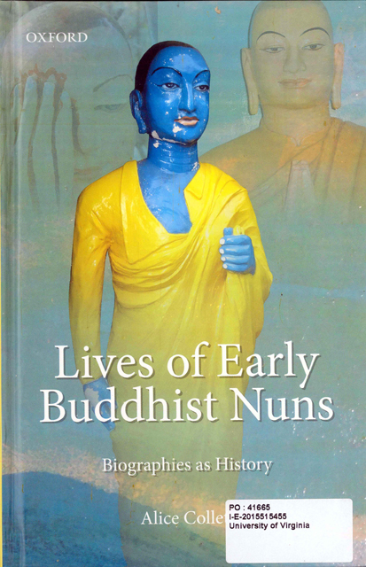 | Lives of early Buddhist nuns : biographies as history. Collett, Alice. 2016. ISBN: 9780199459070.
Contents: "Based on new translations of Pali texts and rare sources, Lives of Early Buddhist Nuns analyses the portrayal of women in the Pali canon and commentaries." http://www.worldcat.org/oclc/935915656 http://search.lib.virginia.edu/catalog/u7363725 |
| 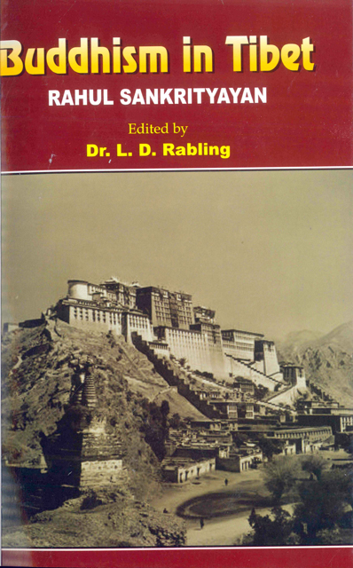 | Buddhism in Tibet. Rahula Sankrtyayana, Losana Dorje Rabalina, Moses Michael. New Delhi : Samyak Prakashan, 2016. ISBN: 9789385540783
Contents: Translation from Hindi. Writes on Early Buddhism, premodern and early modern Southeast Asia, Pali literature, Buddhism in Kashmir, and the wheel of the law http://www.worldcat.org/oclc/964698745 |
| 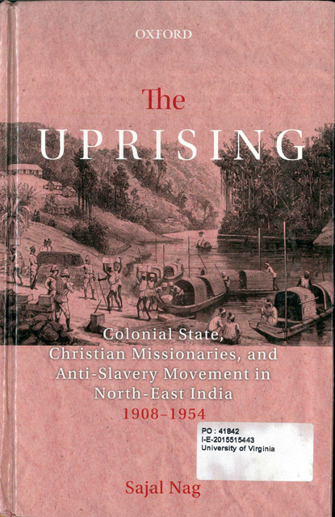 | The uprising : colonial state, Christian missionaries, and anti-slavery movement in North-East India (1908-1954). Sajal Nag. New Delhi : Oxford University Press, 2016. ISBN: 9780199460892.
Contents: This "book is on a serious academic theme, written in a narrative mode. Brings to light unexplored historical events that surrounded the abolition of slavery in Mizoram. North East India is an upcoming field of study. http://www.worldcat.org/oclc/936380235 |
| 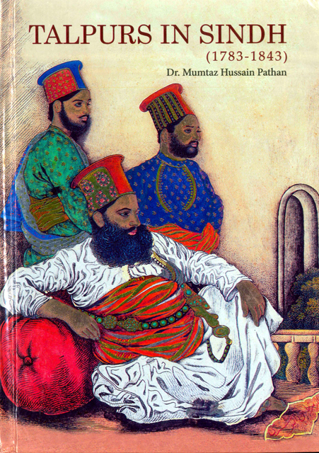 | Talpurs in Sindh, 1783-1843. Mumtaz Husain Pathan; Endowment Fund Trust for Preservation of the Heritage of Sindh. Endowment Fund Trust for Preservation of the Heritage of Sindh. 2017. ISBN: 9789699860119.
Contents: The Talpurs in Sindh are "the descendants of Mir Tala Khan. They arrived in Sindh during the invasion of Nader Shah."
http://www.worldcat.org/oclc/1019840768 |
| 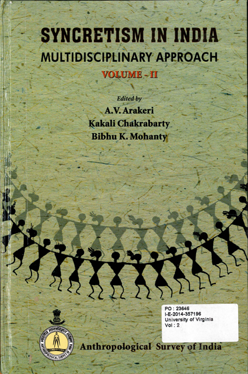 | Syncretism in India : multidisciplinary approach. Arakeri, A. V., Chakrabarty, Kakali, Mohanty, Bibhu K. Anthropological Survey of India, 2013. 2 volumes. ISBN: 9789382984115. Contents: 13 essays in two volumes, studies of syncretism in religion and culture, as for example in the Bishnois, Bengal weavers, Santals, Asamiya Sikhs, Tangkhul Christian tribals, etc.
http://www.worldcat.org/oclc/890802623 http://search.lib.virginia.edu/catalog/u6641942 |
| 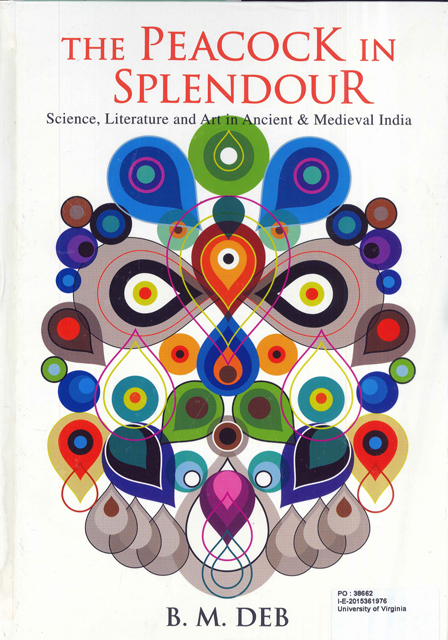 | The peacock in splendour : science, literature and art in ancient and medieval India. Deb, B. M. Visva-Bharati, 2015. ISBN: 9788175224520.
Contents: This book is "a result of long and painstaking research over many years," and is a refreshing and "structured book with a pioneering effort to examine the intellectual dimensions of Indian holism."
http://www.worldcat.org/oclc/932407755 |
| 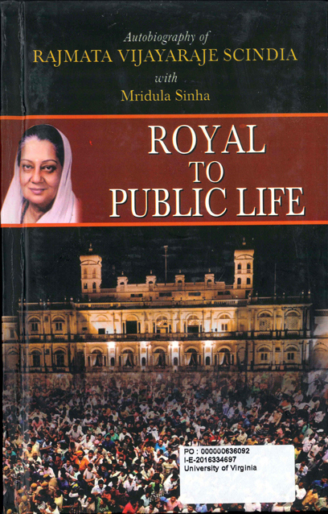 | Royal to public life. Scindia, Vijayaraje, Sinha, Mridula, Shekhar, Saurabh. 2016. ISBN: 9789351868286.
Contents: Mridula Sinha writes "Ideologically, I found myself close to Jana Sangh and Swatantra Party. I was in a dilemma to choose between the two. So, I decided to contest the election on the ticket of both these parties."
http://www.worldcat.org/oclc/973199424 |
| Delhi city atlas: with Faridabad, Ghaziabad, Gurgaon, Noida. Indian Map Service, Arya, R. P., Arya, Jitender, 2016. ISBN: 8187460237. Atlas http://www.worldcat.org/oclc/972521892 | |
| 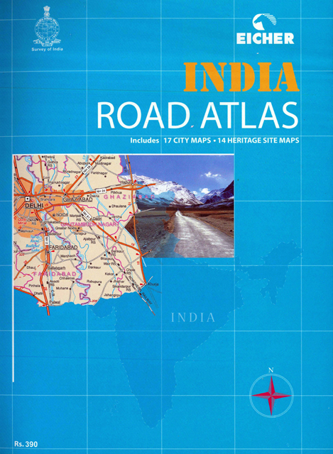 | India, road atlas : includes 17 city maps, 14 heritage site maps. Eicher Goodearth Limited, Survey of India, 2016. ISBN: 9789380262376.
Contents: India road atlas http://www.worldcat.org/oclc/972521916 |
| 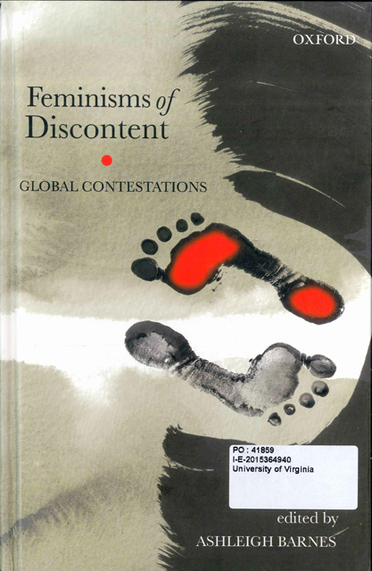 | Feminisms of discontent : global contestations. Ashleigh Barnes. Jindal Global University. Centre for Women, Law and Social Change,Australian National University, 2015. ISBN: 9780199085521 .
Contents: Contributed articles presented at the Conference Feminisms of Discontent: Global Contestations: Debates on Gender and the Law, organized by the Centre for Women, Law and Social Change, in collaboration with Australian National University, held during February 18-20, 2011, at New Delhi.
http://www.worldcat.org/oclc/924102232 http://search.lib.virginia.edu/catalog/u7363735 |
| 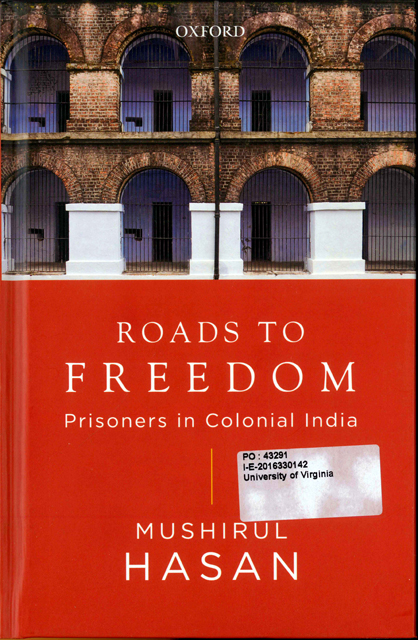 | Roads to freedom : prisoners in colonial India. Hasan, Mushirul. New Delhi, India : Oxford University Press, 2016 ISBN: 9780199458837.
Contents: "This book examines the history of prison and prisoners in colonial India. Based on substantial archival research, it presents the conditions of the prisoners, their vision for the freedom movement and the various aspects of prisons in the subcontinent."
http://www.worldcat.org/oclc/951783981 http://search.lib.virginia.edu/catalog/u7363729 |
| Pravasi Bharatiya Hindi sahitya : Phiji, Surinama, Dakshina Aprika, aura Morisasa. Varma, Vimalesa Kanti, Bharatiya Jnanapitha. Nayi Dilli : Bharatiya Jnanapitha, 2016. ISBN: 9789326354370.
Contents: Diaspora literature in Hindi from Fiji, Surinam, South Africa, and Mauritius
http://www.worldcat.org/oclc/969567291 | |
| 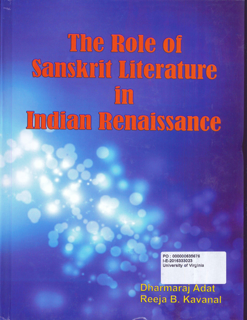 | The role of Sanskrit literature in Indian renaissance. Atatt, Dharmmaraj, Kavanal, Reeja B. Delhi, India : New Bharatiya Book Corporation, 2017. ISBN: 9788183152051.
Contents: "Contributed research papers on nationalism, chiefly with reference to Sanskrit literature from Kerala" India. http://www.worldcat.org/oclc/965129502 |
| 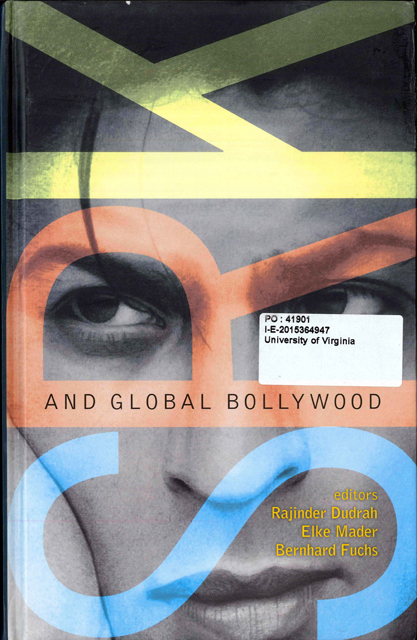 | SRK and global Bollywood. Shah Rukh Khan and Global Bollywood (Conference). Dudrah, Rajinder Kumar, Mader, Elke, Fuchs, Bernhard. New Delhi : Oxford University Press, 2015. ISBN: 9780199460472.
Contents: Contributed articles presented at the conference, Shah Rukh Khan and Global Bollywood, held on September 30, 2010, at Vienna, Austria. It "is a timely collection of essays that seeks to analyse the SRK phenomenon and the process how SRK circulates through a range of media products and how they are consumed in India, its diaspora and by audiences."
http://www.worldcat.org/oclc/930492904 |
| 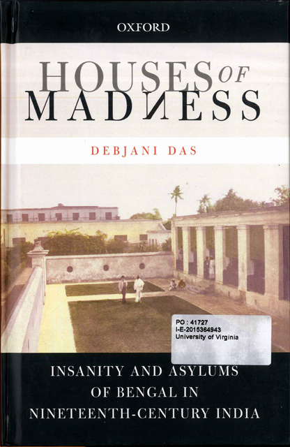 | Houses of madness : insanity and asylums of Bengal in nineteenth-century India. Debjani Das. New Delhi, India : Oxford University Press, 2015. ISBN: 9780199458875.
Contents:his "unique focus combines neglected themes-issues of psychological health, imperial history, and the history of asylums in colonial Bengal; it highlights the significance of gender in shaping access to medical care." http://www.worldcat.org/oclc/923794723 |
| Crumbs! : bread stories and recipes for the Indian kitchen. Koranne-Khandekar, Saee. Gurgaon : Hachette Book Publishing, 2016. 2016. ISBN: 9789350099063 .
Contents: The author "recounts her journey of becoming a bread-maker and hand-holds the average yeast-fearing, dough-despairing home cook through the deliciously satisfying experience of literally putting bread on their tables." http://www.worldcat.org/oclc/951612342 | |
| 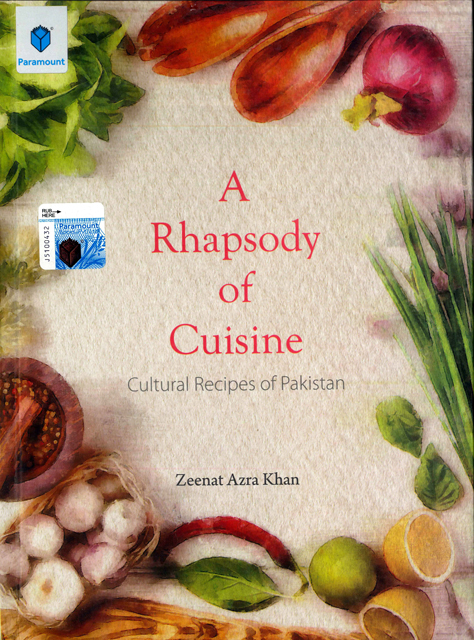 | A rhapsody of cuisine : cultural recipes of Pakistan. Khan, Zeenat Azra. Karachi : Paramount, 2017. Contents: "A wide variety of recipes for traditional Pakistani and sub continental cultural dishes - rhapsody of taste - has been put together from different areas of Pakistan along with typical family recipes, collected with the help of friends and families."
http://www.worldcat.org/oclc/1004425220 |
Back to the top | |
Philip McEldowney
last update -
date
count - access